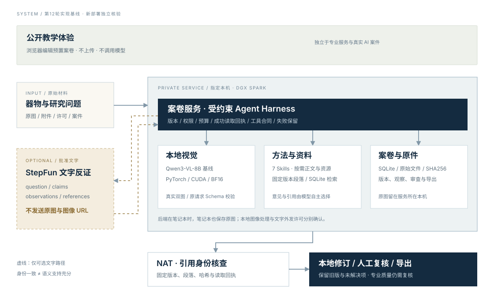
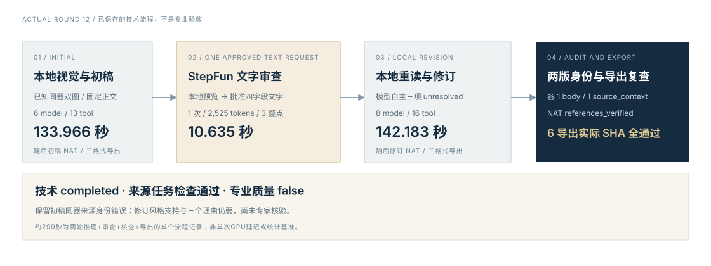

MUSEUM / 博物馆
编目与研究
分别记录馆方已有编目、照片中可见的特征，以及本次研究者提出的解释。意见能回到原图区域与资料段落，便于复核和后续补拍。
- 登记
- 观察
- 参照
- 复核
 瓷证CIZHENG · PROJECT REPORT
瓷证CIZHENG · PROJECT REPORT瓷证 · 完整图文报告书
从一张器物照片，到一份能交接的研究案卷。
本报告介绍产品、系统与七个方法包，并完整展开第 12 轮真实 AI 运行：它读了什么、写了什么、如何回应反证，以及为什么专业质量仍未通过。


两张真实 Met Open Access 照片，也是第 12 轮实际输入。馆藏身份已知；该流程不是未知器物盲测，照片与机构均不背书本项目。
BUSINESS / 研究中的交接
器物研究常常散落在照片、目录、附件和口头判断里。瓷证把这些材料放回同一份案卷，保留原始文件、具体观察、资料出处、不同解释与意见变化。
MUSEUM / 博物馆
分别记录馆方已有编目、照片中可见的特征，以及本次研究者提出的解释。意见能回到原图区域与资料段落，便于复核和后续补拍。
COLLECTOR / 收藏者
将器物、交易或传承说明、修复记录与原始附件关联。缺少的经历保持待核，不把没有材料支持的故事写成已证实来源。
CATALOGUE / 拍卖从业者
区分描述、归属措辞与状况假说，检查每一句话依赖的材料。交接时同时带走报告、原始附件及文件哈希清单。
这三种角色是产品场景和教学设计，不代表已发生的机构委托、收藏交易或拍卖采用。三套公开案卷使用已知身份的真实馆藏照片；研究示例由项目编写。

SYSTEM / 本地原图与许可文字
公开体验在浏览器编辑教学材料。专业服务将图像、案卷、方法和固定版本资料放在指定本机或 DGX Spark；外部文字审查需要单独预览和批准。

专业工作台的原图由服务所在本机保存并处理。服务部署在笔记本时，笔记本也保存原图；通过 SSH 隧道访问 Spark 不等于照片自动公开。
Agent 按需读取方法正文和参考资源。基线采用 SQLite 中文关键词检索；项目原创摘要保留机构链接、适用范围、权利与版本，不能把搜索分数当证据可信度。
本地读取许可不等于外发许可。StepFun 只接收经批准的 question、claims、observations、references 四字段文字包；第 12 轮没有外发原图或图像 URL。
NeMo Agent Toolkit 实际检查报告所引用的资料版本、段落定位、哈希与成功读取回执。它核对“是否为实际读过的同一份资料”，不自动判断资料是否支持某个归属，更不证明真伪或专家认可。
METHODS / 七个自研 Skills
每个方法包提供适用范围、工作步骤与参考材料，以描述 → 正文 → 按需资源渐进加载，整包 SHA 固定实际版本。宿主约束权限、工具执行、读取回执和预算；不替模型选择引用或写出结论。
先确认研究任务、输入覆盖和缺失视角，再安排后续观察或补证。照片没拍到的部位不能默认为没有问题。
分开基本档案、实际照片观察与资料记载。研究意见保留依据、限制和需要人工复核的事项。
从器形、纹饰和工艺线索提出竞争解释，分别找支持、冲突与缺项。相近的风格不能直接转成同年代、同窑口或真品结论。
把照片迹象与裂纹、磨损、修复等假说分开，保留摄影、反光和污染等竞争解释。不能仅凭照片证明没有修复。
核对来源事件、记录时间、同器联系和原始附件，将证据断点与待核事项单独保留；有一个名字不等于已经证明一条传承链。
只读取本案许可文字与固定资料段落，把相符、冲突和缺失写回案卷。文字真实性与实物归属需另行核验。
比较新旧依据，对每一条反证保留裁决和理由；新版本解释改变了什么，也保留失败与未解决项。
实际第 12 轮初稿加载前三个包，修订再加载第七个包。加载、软件合同与领域效果分别记录；当前没有独立专家样本的有 / 无 Skills 同预算对照，也没有 NVIDIA Verified 或专家认证。
EVIDENCE / 从原件到意见的五个连接
可回查意味着原件不被解释替代，资料不被新版本悄悄覆盖，观点也不因重新导出就失去当时依据。
第 12 轮初稿和修订各读取同一段固定正文，并各保存一条 source_context 引用，NAT 为 references_verified。六项文档 / 段落 / 版本身份与读取回执一致，但这仍不是语义支持审查：初稿实际存在同器来源身份错误，详见第八章。
原始 JSON、Markdown 和 HTML 报告保留在私有记录；公开证据发布安全副本、逐文件原件与公开 SHA、导出回执及只读 audit。报告可能内嵌原图，公开证据不复制原图 base64、凭证、私有地址、SSH 身份或原始 nsys。
ACTUAL AI CASE / 实际模型观察
本案采用 Met 馆藏号 18.61.4 的两个公开视角，系统已知它们属于同件器物。图像、问题和固定资料通过实际服务进入第 12 轮；以下“模型原话”摘自保存的观察和报告，未替模型补写专业判断。
区域框按模型保存的原图归一化坐标展示，是可复查的定位结果，尚未由专家确认观察准确性。“花觚”来自馆方编目；模型在原始文本中使用“瓷瓶”等称呼，本报告保留这种差异。
初稿 AI 区域修订新增区域[0.22, 0.17, 0.78, 0.83]；原记录 limitation 为空，这不表示没有观察局限。初稿 AI 区域[0.22, 0.17, 0.78, 0.83]；“花篮”是模型用词，不是专家判定。项目编辑说明 修订保留两条原有观察，并新增：“青花山水纹饰对称布局”，解释为“山水纹饰布局对称”，区域 [0.35, 0.35, 0.65, 0.65]。定位、措辞与语义准确性需要分别审查；实际运行成功不将这些描述自动转成专业事实。
Met馆藏18.61.4是一件山水纹花觚，页面记录为清代康熙早期的景德镇釉下钴蓝瓷，尺寸为高48.3厘米、直径23.2厘米，购藏记录为Rogers Fund, 1918。系统分别保存馆方记录、实际图像观察和尚待核查的问题；这些标签不得自动赋给其它外观相似器物。
这是实际入库并送达模型的项目摘要，原资料机构为 Met；摘要仍待专家复核，不冒充馆方解释性长文。馆方归属只针对已知馆藏，不是未知器物的通用断代规则。
查看馆方原始对象页 ↗ · 查看实际资料副本 ↗OPINIONS / 真实初稿与本地修订
初稿和修订都没有给出确证断代或真伪结论。下面逐项对照候选、理由与保存的依据；引号内保留模型原话，编辑说明单独标注。

候选：“康熙早期”
理由：“馆方记录提及康熙早期，但无实物佐证”
候选：“康熙早期”
理由：“馆方记录提及康熙早期，但无实物证据支持”
项目编辑说明：已知馆藏的编目记录与独立实物断代是不同层次。山水纹饰观察能被定位，但不能独自证明制作时期；修订的支持关系尚未通过专家核验。
候选：“景德镇”
理由：“无款识或胎体证据支持窑口”
候选：“景德镇窑”
理由：“无款识或胎体证据支持窑口”
项目编辑说明：模型保持证据不足，没有补出款识、胎体检查或参照照片。资料里记载的产地属于馆方编目上下文，不代表本系统完成了独立窑口验证。
候选：“山水花篮纹饰风格”
理由：“纹饰布局符合清代早期特征”
候选：“山水纹饰风格”
理由：“装饰布局对称，符合清代风格”
项目编辑说明：“对称”到“清代风格”的推理仍缺可定位标准器比较、具体区分特征和竞争解释验证。原始判断完整保留，不能把一条关联观察当成专业支持充分。
“依据当前图像与资料，制作时期、窑口、风格均不足”
原记录限制：“无参照图支持断代”“无款识或胎体证据”“未完成实物检测”。列有“后世仿品”“现代仿品”两个竞争解释，但未完成其专业比较验证。
“基于当前图像与资料，无法确认制作时期、窑口与风格”
修订要求“拍摄器物款识、胎体及釉面细节”，理由为“无款识或胎体证据支持窑口与时期”。这是模型的补证请求，不是已完成的实物检查或鉴定。
CRITIC / 真实文字审查与逐项回应
实际 StepFun step-3.7-flash 一次批准文字请求成功，耗时 10.635108 秒：818 prompt + 1,707 completion = 2,525 tokens，cached 256 已包含在 prompt 内。下列审查意见与本地修订裁决都来自保存记录。
“康熙早期断代主张无实物佐证，未提供对应引用依据”
实际理由：“需实物检测确认款识与胎体”
项目编辑说明：理由保留了需实物检测的限制，但尚未逐项解释现有来源与观察如何支持或不能支持年代候选。
“景德镇窑口主张无款识、胎体等证据支持，未提供对应引用依据”
实际理由：“需实物检测确认胎体”
项目编辑说明：没有发生实际胎体检测，不能把该理由写成检测结论；馆方编目与独立窑口判定仍须分开。
“山水花篮纹饰风格主张无具体特征比对依据，仅笼统符合清代早期特征”
实际理由：“需实物检测确认釉面”
项目编辑说明：这一理由与“具体风格比对依据不足”的对应性仍薄弱。未解决不等于已经充分回应，需专业复核。
StepFun 没有看到原图，返回的限制包含“未查看待审器物原图，无法核验实物特征”。它还把当前来源说成“同类型馆藏编目”，虽然输入实际上是身份已知的同件馆藏。外部审查文本也必须复核，不能被当成专家真值。
它建议补充款识、胎釉检测报告，以及同类型标准比对资料；这些建议尚未实际采集。三个疑点的引用 ID 均为空，批准包的一条来源上下文引用不自动成为各主张的支持。
QUALITY / 留下成功，也留下问题
“馆方记载仅针对Met馆藏18.61.4，不适用本件”
输入恰为这件已知馆藏的照片，这句话存在可见身份矛盾。初稿通过引用身份核查，仍可能错误解释引用的适用关系。修订删去“不适用本件”，但没有因此自动取得专业质量通过。
修订的年代支持关联到一般山水观察，风格理由仍从“对称”跳到“清代”；三个 unresolved 理由未充分回应全部疑点。外部审查也有同器 / 同类型混淆，模型之间的往返不等于专家核验。
原始观察 limitation 为空、冲突数组为空、竞争解释未实证，均保持原样；本报告没有为它们补写证据或把 insufficient 改为通过。
初稿有一次来源门禁修复，修订零 validation error；模型自主选择引用、意见与裁决。14 条第 12 轮新增原生记录排除 34 条历史，不把总日志条数当本轮样本。此前第 09 轮最终引用缺失、第 10 轮文字格式失败、第 11 轮修订合同失败均保留。
STATUS / 已有回执与新的部署核验
以下固定事实来自第 12 轮及已归档的工程记录。新服务部署以独立状态数据和实际回执更新，不能把计划、权重下载、合成探针或工程测试当成完整业务和专业验收。
| 固定记录 | 已有实际结果 | 结论边界 |
|---|---|---|
| Spark / 8B / CUDA | 真实双图视觉与主动作；第 12 轮初稿 + 批准文字审查 + 修订 + 核查 + 导出完成 | 专业质量 false，器物领域准确性未测 |
| r15 应用工程回归 | 913 passed / 8 skipped / 1 warning，309.15 秒；专项 403 / 6 / 1，143.49 秒 | 均 0 次 GPU 模型请求，不是领域能力测试 |
| 原生与阶段 Schema | 147 passed / 1 warning，4.54 秒，实际在 r14 测试；相关生产代码与 r15 相同，原生服务为 r11 | 格式、传输与合同检查，不证明观点正确 |
| 运行源码一致性 | 86/86 核心、测试、集成 Python 文件与实际 r15 部署清单 SHA 匹配 | 不是整个 Git 仓库或专业质量验证 |
| Nsight Systems | 第 03 轮首次双图生成：1 个 NVTX 区间 19.9205 秒，144 kernel 聚合行 / 447,028 实例 | 实际 GPU 采集，不是提速结论或整案耗时 |
| 32B 历史候选 | 官方 25 文件 / 66.73 GB、CUDA/BF16 与合成协议通过；真实双图因区域合同失败 | 候选停止、不驻留，未证明优于 8B |
第 12 轮基线中，NVIDIA vLLM ARM64 镜像未完整部署，NIM 受中国区官方分发限制，TensorRT-LLM、Dynamo、NeMo Retriever 未部署。这是历史基线，不将其写成新一轮部署的最终状态；新增服务只能根据上方实际更新说明。
专家材料接入需要器物身份、许可、观察原件、检查条件、专家独立意见与盲评映射。当前尚未接收该样本、未校准真品率；工程回归、纯色图和公开合成探针不能补足这项缺口。
READ / TRY / TRACE / HAND OVER
实际编辑档案和观察、定位证据、阅读方法、纳入预置补证、保存复核、比较版本并导出。访客修改保存在本浏览器，报告与 ZIP 保留教学标记。
打开三套教学案 →80 秒静音中文字幕，根据真实记录整理，技术流程完成、专业质量 false；原图未外发。旧第 11 轮失败回放独立保留，不拿教学界面替代真实模型结果。
观看第 12 轮记录回放 ↗10 页可编辑介绍及实际 PPT 渲染预览；开发纪实记录制作、失败与修复。视频 / 文章文件已制作，不代表 B站、CSDN 或比赛渠道已正式提交。
预览实际 PPT ↗阅读开发纪实 →完整报告由实际浏览器按 A4 打印，保留原生矢量图、器物照片、意见对照与证据字段，并经过逐页查看。阅读本页或下载 PDF，均可回到同一组固定来源。
PDF 完整报告 · 下载准备中本页仅加载同源公开状态 JSON；不读取私人案卷，不发送照片，不调用模型。项目代码 MIT；Met 基本记录与公版照片遵循 Open Access / CC0，原机构不背书本项目。
初稿模型原话、区域、资料读取与意见单次实际执行、usage、三条疑点修订模型原话、支持关系与 unresolved 理由批准包、两张原图、六份导出与原生调用绑定身份误句、弱推理、专家未验，quality false排除 34 历史行，不混用总日志样本保留历史失败，原始报告与凭证保持私有图文编辑来源与模型原话分层，可按原始字节回查